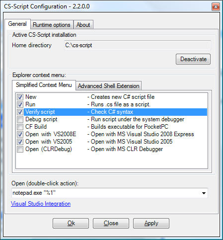

If you need to debug your script firstly make sure you have a CLR
compatible debugger installed. Almost any CLR IDE can be used as such a
debugger.
You can start debugging by using one of the these possible
approaches:
Run script with //x
switch as the last parameter. This switch is similar to '//x' switch for Microsoft's cscript.exe (VBScript, JScript engine).
Right-click script file in Explorer and select "Open (...)".
This will open your script in the debugger (or IDE depending on what
you have installed). Now you can start the script under debugger.
Currently supported
debuggers/IDEs are:
.NET Visual Studio 7.1
.NET Visual Studio 8.0
SharpDevelop
MS CLR Debugger
Put in your code the following string: System.Diagnostics.Debug.Assert(false);
Use /dbg
switch when you execute your script.
This will bring the Assertion dialog at run-time and you will be able
to continue execution under the debugger of your choice.
Run script with /dbg
switch. During this execution run your debugger
and attach it to the running process (e.g. cscs.exe) by usual means. Of
course this approach can be used only if your debugger supports "attach
to process" debugging.
Using system CLR debugger
This is the simplest way of debugging scripts. The switch //x, if present
as the last parameter in the command line, will always launch the
"Select Just-In-Time Debugger" dialog to allow attaching to the script
engine process. After appropriate debugger selected you can
start debugging. Press F10 ('Step over' command on most for the MS debuggers) and debugger will stop at the first line of the script.
Note: The Visual Studio debugging option
"Enable Just My Code (Managed only)" must be turned on in order for
the F10 key to step you to the first line of your script. If this option is
turned off, you will need to manually load your script and set a breakpoint on
the first line, then hit F5.
Alternatively right-click the script file in explorer and select "Debug
Script". It will append //x to your script command automatically. The
corresponding shell extension can be enabled/disabled from the
configuration console.
Note: if you are debugging under .NET 1.1, you will need to open the
source file (script) in the debugger manually, before pressing
F10. The problem was addressed by MS in .NET2.0.
Changing default script debugger
If you want to change the debugger associated with the right-click
context-menu you can do it from the configuration console. It will
allow you to enable particular debugger a list of supported/available
debuggers (see CS-Script settings).

Tracing
Sometimes it is very useful to know runtime settings during the script execution. You can use /verbose command-line switch to to print this information into console output:
Also it can be very useful to use Trace statements in your code in
order
to
output some run-time information (/dbg switch must be used to enable
tracing). Such technique is especially suitable for situations
where you do not want to use a debugger. Just run your "trace listener"
and it will catch all trace outputs from you script. You can
download CLR "trace listener" applications from the Internet. In the
example below TraceMonitor (http://www.szurgot.net/projects)
was used as a "trace listener". Alternatively you can use DebugView from Sysinternals.
Example:
Put a trace statement in the script code (e.g. System.Diagnostics.Trace.WriteLine("Hello
World!"); in Hello.cs)